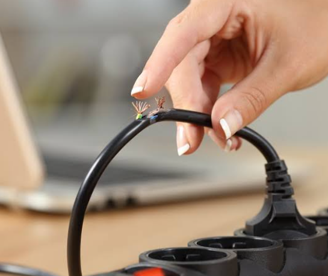
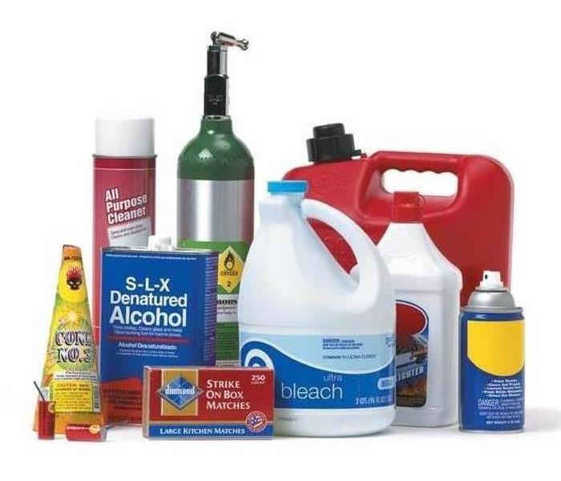
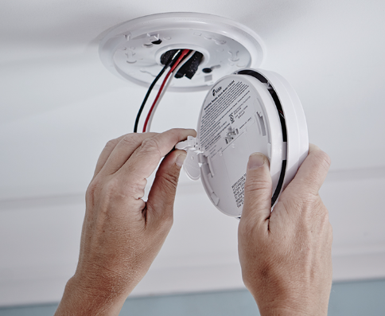

MARCH INTO FIRE PREVENTION MONTH |
A fire can happen anywhere and it’s important to always be prepared for what you would do if you had one in your home. Likewise, it’s just as important to look at all of the ways that you can prevent one from happening in the first place. You want to know how to prevent fire in your home to protect it and the ones you love. Of course, there are the more obvious things that you can buy to protect your home against fire, such as smoke alarms, fire extinguishers, having an escape plan, and even fireproof safe deposit boxes to protect your valuables. The truth is, however, there are some very simple steps that you could be doing to keep yourself safer and, if you start right now, you may be able to prevent a problem before it even happens. |
How to Prevent Fires at Home |
|
|---|---|
|  | 1. MAINTAIN YOUR WIRES Before you plug something into a socket, try to be courteous in ensuring that the wire hasn’t been torn or chewed up (in case you have any pets running around). Damaged wires can be a detrimental fire hazard and need replacing as soon as possible. Also, remember that wires do get hot when in use, so be sure to check your wire placement and avoiding passing them under a carpet or anywhere that could potentially catch fire. |
2. NEVER LEAVE YOUR KITCHEN UNATTENDED WHILST COOKING It only takes a few seconds for a fire to break out. If you need to leave the kitchen for any reason whatsoever, make sure to either ask someone to watch the food for you or turn everything off altogether until you’re back. Many home fires start on kitchen stovetops. Never leave your stovetops unattended when you are cooking, especially if you are cooking on high heat. Keep flammable items such as curtains, bottles of oil, oven mitts, and paper towels far away from burners. If oil or grease in your pan catches on fire, remember not to splash water on it as that will cause the fire to spread. Cover the pan with a lid to suffocate the flames. |
|
3. SMOKE OUTSIDE Smoking outside the home is the best way to avoid a house fire. However, if you must smoke in the home, never leave a lit cigarette unattended. Make sure that you use large, deep ashtrays with water inside to fully extinguish cigarette butts. Stray cigarette embers can smolder for hours before igniting. Do not smoke indoors if you are sleepy, drowsy, or intoxicated as you will be more likely to be careless. |
|
|  | 4. STORE ANY FLAMMABLE PRODUCTS AWAY Household cleaners and items such as hair spray or shaving cream may be very hazardous if exposed to a strong source of heat. Always store these safely in a cool area away from any heaters. |
|  | 5. TEST SMOKE ALARMS According to FEMA, 51 percent of deaths from residential fires occur at night when people are sleeping. You should install smoke alarms on each level of your home, particularly inside bedrooms and in their adjoining corridors. Smoke alarms can be interlinked to sound in unison so the whole house is alerted in the event of a fire. Test your smoke alarms monthly and replace any low batteries. |